Bridge Compliance Submission
Business overview, client agreements, and product documentation
Entity: NodeRails
Website: noderails.com
WallCard: wallcard.noderails.com
Contact: business@noderails.com
Date: July 2026
Thank you for your follow-up. This document supplements our website and onboarding materials with:
NodeRails is a non-custodial payment infrastructure company for businesses. We provide software that helps online merchants accept payments, manage checkout, issue invoices, run subscriptions, reconcile transactions, and settle funds to wallets or bank accounts designated by the merchant.
Our primary clients are businesses: international SaaS companies, AI product vendors, software sellers, marketplaces, and other digital merchants. NodeRails is a technology orchestration layer. We do not operate as a bank, exchange, or custodian of customer funds.
How payments and settlement work: Customer payments are accepted through NodeRails hosted checkout and on-chain settlement to the merchant's wallet. Virtual accounts for merchants are used separately for bank settlement offramp only. Merchants do not receive customer payments into virtual accounts. WallCard serves individual users with optional personal virtual accounts and neo banking features.
| Product | Client type | What we provide |
|---|---|---|
| NodeRails Merchant Platform | Businesses, SaaS, marketplaces, creators | Hosted checkout, payment links, invoices, subscriptions, merchant dashboard, webhooks, API/SDK, dispute tooling, payout orchestration |
| WallCard | End users / payers | Self-custodial mobile wallet with neo banking features on iOS. Verified users can create personal virtual accounts and access partner card features. Users control their keys and chain addresses. |
| Virtual accounts (merchants) | International SaaS, AI, and software businesses on NodeRails | Bank settlement offramp only: KYC, account request, offramp initiation, and settlement tracking in our software |
| Virtual accounts (WallCard) | Verified individual users | Personal receive accounts, balance display, payout and card workflow in our software |
Virtual accounts will be offered in two product contexts. NodeRails provides the software experience, customer onboarding, and transaction attribution.
Who uses them: International businesses selling software and digital products, including SaaS companies, AI product vendors, and other online merchants on NodeRails.
Why they use them: For bank settlement offramp only. After collecting customer payments through NodeRails checkout (crypto), merchants use a virtual account to convert and settle their business proceeds to a bank account.
Where funds come from: The merchant's own commerce proceeds already collected on the NodeRails platform. Customer payments are not deposited into merchant virtual accounts. Customers pay through hosted checkout and on-chain settlement; the merchant later offramps eligible balances to bank via the virtual account.
What happens next: Merchant initiates offramp from the dashboard. Settlement is tracked against the merchant's business account. Funds are sent to the merchant's designated bank account through the offramp workflow.
Who uses them: Verified individual users of the WallCard mobile app who opt in to neo banking features alongside the self-custodial wallet.
Why they use them: To receive fiat into a personal virtual account, view balances in one app, and access card and conversion features where available.
Where funds come from: The user's own inbound transfers, such as salary, client payments, or personal top-ups from accounts they control. Funds belong to the verified user and are not pooled with merchant or NodeRails operating funds.
What happens next: The user manages their account in WallCard. Fiat account balances and crypto wallet assets are kept separate. On-chain assets remain self-custodial.
NodeRails will complete identity and business verification (KYC) for every user before a virtual account is provisioned, on both the merchant platform and WallCard.
We will comply with applicable partner program obligations, including prohibited use rules, accurate customer information, sanctions screening, and transaction monitoring requirements.
NodeRails does not hold fiat customer funds. We provide onboarding, product workflow, offramp initiation, and settlement tracking only.
NodeRails onboard merchants through our self-serve dashboard and developer portal. The primary contractual relationship is established through our published legal terms, accepted at account creation and continued use of the platform.
All merchants agree to the NodeRails Terms and Conditions before using the platform:
URL: https://www.noderails.com/terms
Effective date: 24 March 2026
Key provisions relevant to Bridge review:
URL: https://www.noderails.com/privacy
Effective date: 24 March 2026
Covers account data, service usage metadata, billing information, support communications, and clarifies our non-custodial data handling model.
URL: https://www.noderails.com/compliance
NodeRails maintains a published AML/CFT policy covering screening, monitoring, merchant due diligence support, and cooperation with regulated partners for account-based flows.
Standard merchant onboarding: Merchant creates an account, accepts Terms and Privacy Policy via click-wrap acceptance, completes business profile and compliance questionnaire, connects settlement wallet or partner account, and receives API keys for integration.
Enterprise merchants: Larger or regulated merchants may sign supplemental order forms or enterprise addenda covering pricing, support, and integration scope. These follow the same core Terms unless explicitly amended.
Payer relationship: End customers paying through hosted checkout or WallCard interact with merchant-branded payment flows. WallCard payer terms are presented within the WallCard product experience.
| Service | NodeRails role | Partner / client role |
|---|---|---|
| Merchant payment acceptance | Software, checkout, reconciliation, webhooks | Merchant sells goods/services; designates settlement destination |
| Crypto settlement | On-chain settlement orchestration to merchant wallet | Merchant controls receiving wallet |
| Virtual accounts (merchants) | KYC, offramp request UI, settlement tracking | Merchant offramps own commerce proceeds to bank; customer payments stay on checkout/crypto rails |
| Virtual accounts (WallCard users) | KYC, account request UI, balance display, payout and card workflow initiation | Verified user receives own inbound transfers for personal use |
| Payer checkout via WallCard | Self-custodial wallet UX, signing, and connected app approvals | Payer controls wallet keys and authorizes individual transactions |
| Crypto card (WallCard, planned) | User-facing card workflow and spend controls in app | Regulated partner issues card and performs card compliance |
Global digital merchants need one platform to accept cross-border payments, reconcile orders, and settle to crypto treasury, stablecoin, or bank accounts. Traditional rails are expensive and fragmented. Crypto rails alone exclude mainstream payers.
Universal Settlement: NodeRails gives merchants Stripe-like operations for programmable money: checkout, links, invoices, subscriptions, disputes, webhooks, and payouts. Customer payments settle on crypto rails. Virtual accounts give merchants a bank settlement offramp for their business proceeds. WallCard gives payers a familiar wallet experience with optional personal banking features.
Virtual accounts will serve two user groups:
NodeRails and WallCard handle KYC, product experience, and offramp or payout initiation. See Section 2.1 for full detail on users, fund sources, and compliance.
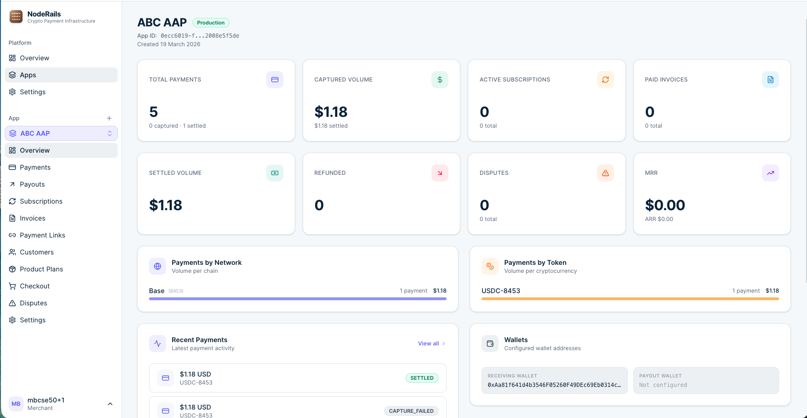
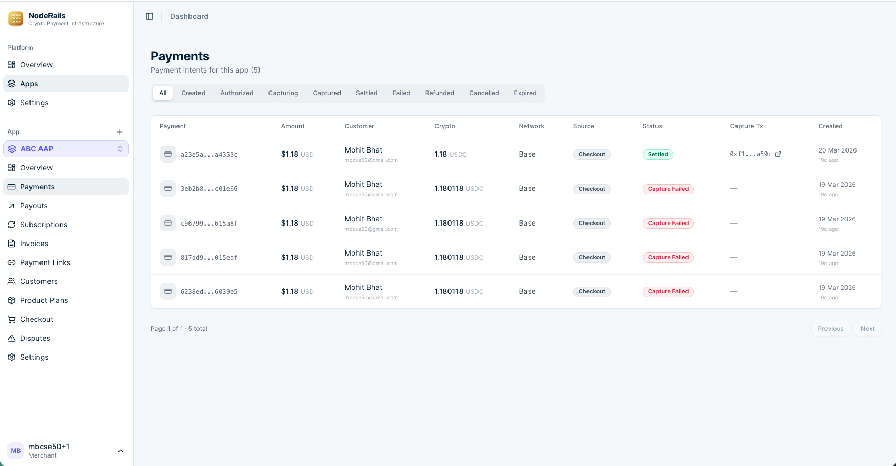
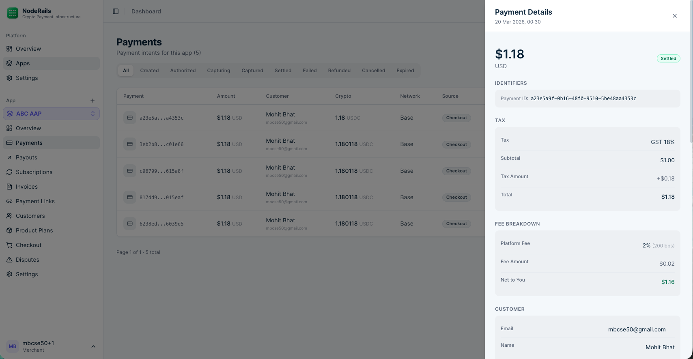
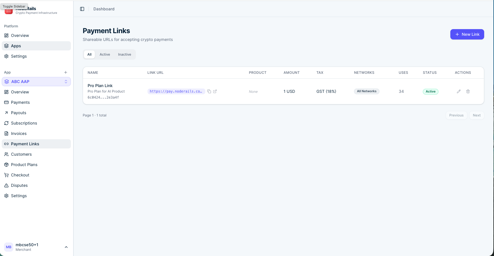
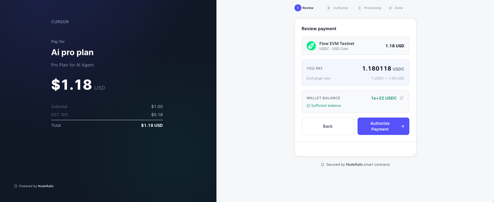
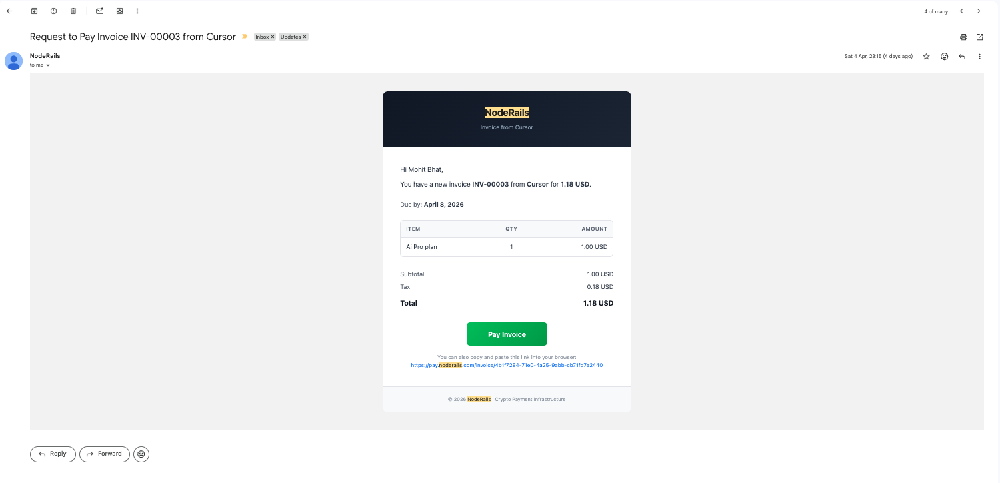
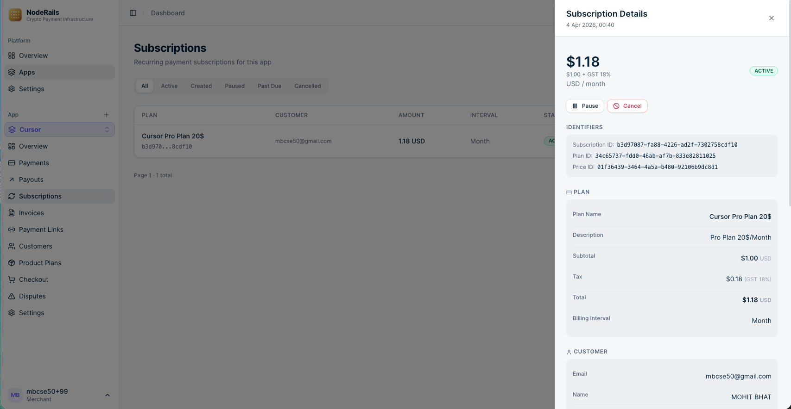
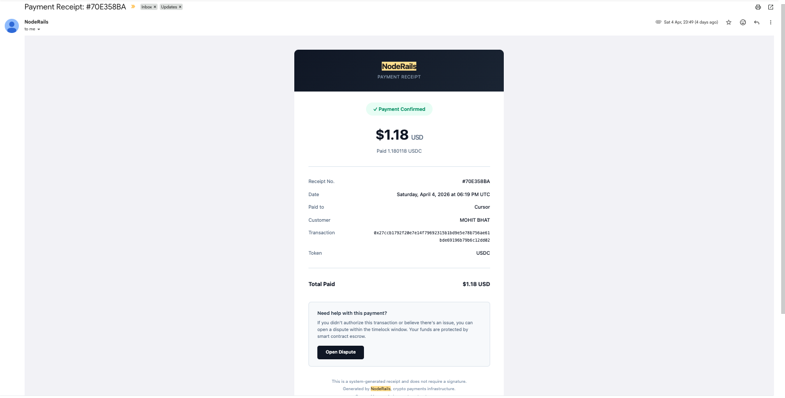
WallCard is not a fiat bank card. It is a self-custodial mobile wallet that presents wallet functionality in a familiar card-style interface. Users control their own keys and on-chain addresses (Ethereum and Solana). WallCard is designed for signing, sending, receiving, and approving payments in connected apps and checkout flows.
NodeRails is extending WallCard into a neo crypto banking app. Verified users can optionally create a personal virtual account while keeping the self-custodial wallet for on-chain assets. Card features will be offered separately where licensed.
Users must complete KYC before any virtual account is created. NodeRails does not hold fiat customer funds.
Live product: wallcard.noderails.com
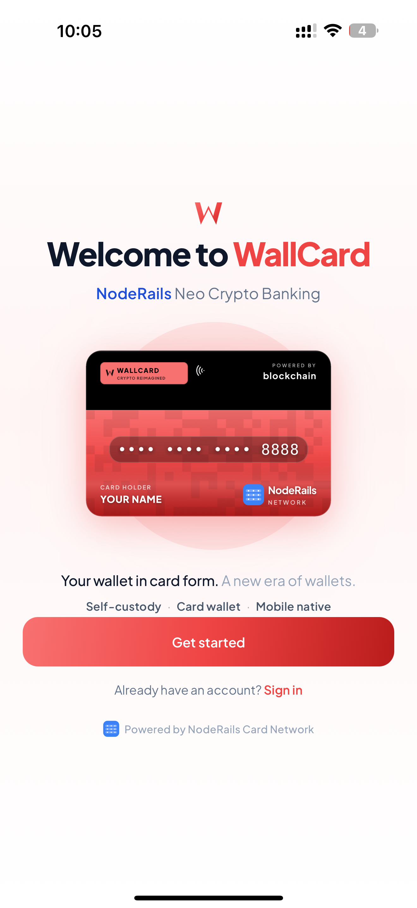
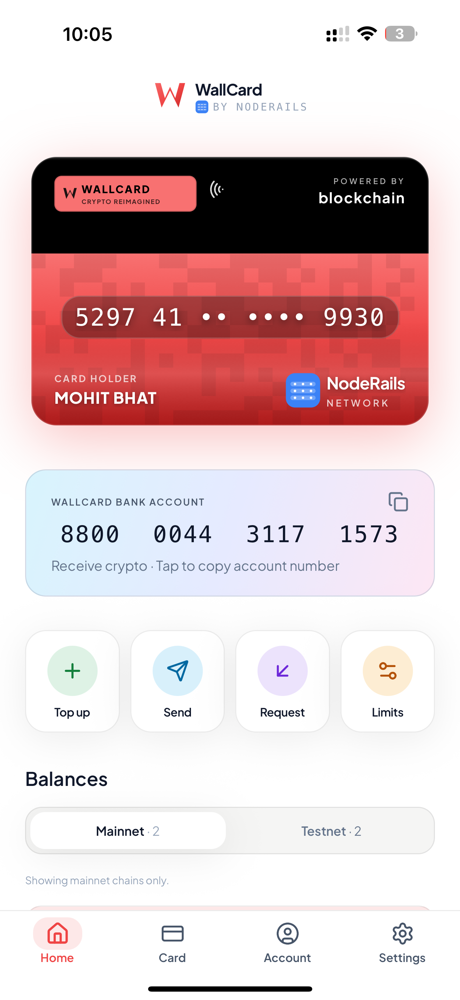
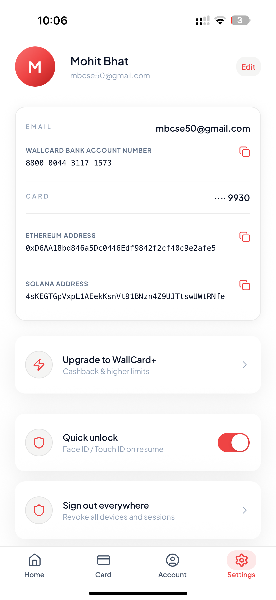
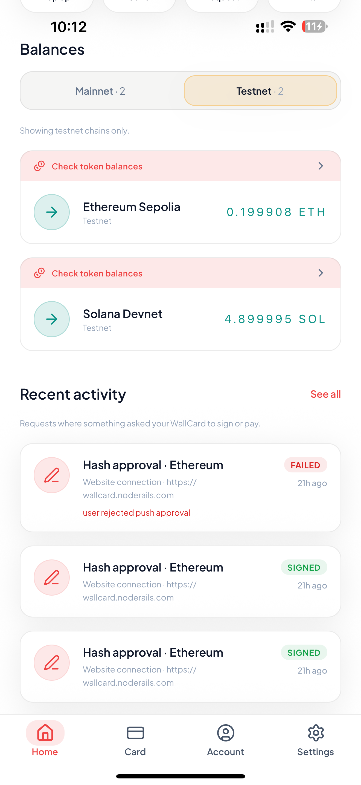
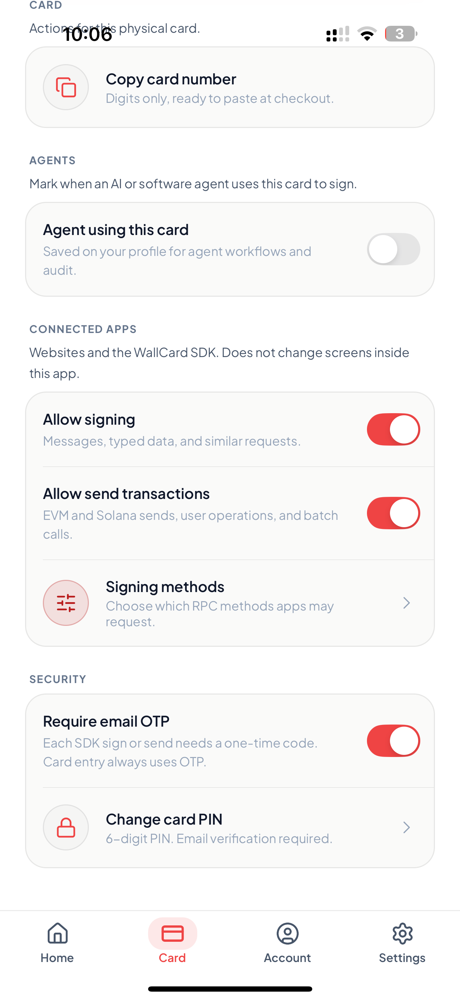
This flow is separate from payment acceptance. Customer payments are handled through the merchant flow above. Virtual accounts are used only when a merchant offramps existing business proceeds to bank.
For additional contracts, merchant samples under NDA, or live product walkthrough:
Email: business@noderails.com
Website: noderails.com
LinkedIn: linkedin.com/company/noderails